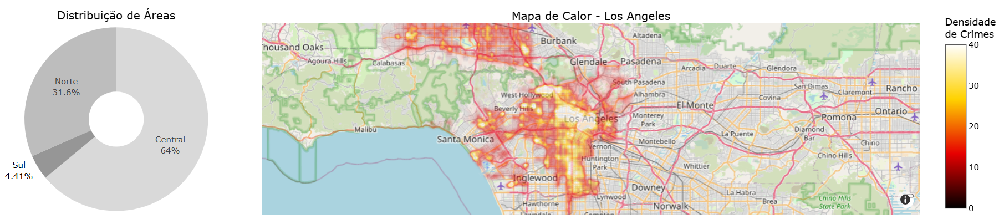
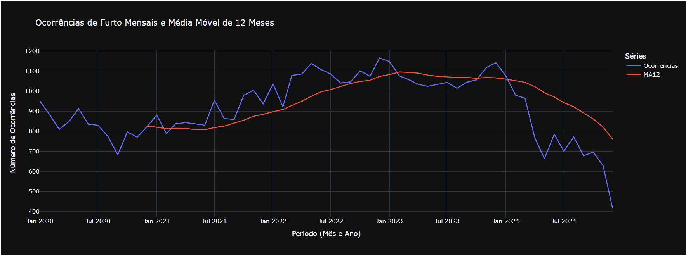

Introdução
Este projeto tem como objetivo analisar os padrões de criminalidade na cidade de Los Angeles no período de 2020 até o presente. Utilizando dados oficiais do departamento de polícia de LA, buscando identificar tendências, áreas críticas e horários de maior ocorrência de crimes.
A análise visa fornecer insights valiosos para:
- Entender a distribuição geográfica dos crimes
- Identificar os tipos de crimes mais comuns
- Analisar padrões temporais nas ocorrências
- Fornecer dados para políticas públicas de segurança
Os dados foram coletados através do portal de dados abertos da cidade de Los Angeles e processados para garantir qualidade e consistência na análise.
Entre 2020 e 2023, a maioria dos tipos de crime em Los Angeles apresentou aumento moderado. A partir de 2023, porém, a tendência inverteu-se de forma significativa. Todos os tipos de crime analisados registraram quedas expressivas. Essas melhorias estão relacionadas à implementação de estratégias de policiamento mais direcionadas, à ampliação de parcerias com organizações comunitárias e à adoção de programas de prevenção à violência, como o Gang Reduction and Youth Development (GRYD) e o Community Safety Partnership (CSP). Essas iniciativas buscam integrar ações da polícia, do governo municipal e da sociedade civil, com o objetivo de tornar Los Angeles mais segura para moradores e visitantes. A prefeita Karen Bass, eleita em 2022, desempenhou papel fundamental nesse processo, promovendo políticas integradas de segurança pública e fortalecendo programas comunitários, o que contribuiu para resultados positivos visíveis na redução da criminalidade a partir de 2023.
Visão Geral dos Dados
📊 Dados Básicos
Total de registros: 1,004,989
Período coberto: 01/01/2020 - 31/12/2024
Última atualização: 31/12/2024
📚 Fonte dos Dados
Os dados utilizados nesta análise foram obtidos através do:
Portal de Dados Abertos de Los Angeles
Dados atualizados pelo LAPD (Los Angeles Police Department)
🌆 Dashboard de Dados
📌 Metodologia
A análise baseou-se em dados oficiais de criminalidade divulgados pelo Departamento de Polícia de Los Angeles (LAPD) entre 2020 e 2024. Para a redução da dimensionalidade da análise, os crimes foram reagrupados nas seguintes categorias: furtos, agressões/roubos e vandalismos. Os dados foram segmentados por período (anual, mensal, semanal e horário), sexo, faixa etária, localização e região geográfica. Para identificar tendências sazonais, foram empregadas técnicas de análise de séries temporais. As políticas públicas implementadas foram mapeadas a partir de relatórios oficiais da prefeitura e notícias institucionais, destacando medidas como o fortalecimento do policiamento comunitário, a atuação da Organized Retail Crime Task Force(ORCTF), a expansão de programas como Gang Reduction and Youth Development (GRYD) e CSP, e a integração de ações de resposta a crises e prevenção à violência. Essas iniciativas foram fundamentais para a redução da criminalidade e o aumento da sensação de segurança na cidade.
Distribuição Temporal
📌 Tendencias Anuais
Entre 2020 e 2023, a maioria dos tipos de crime em Los Angeles apresentou aumento moderado. A partir de 2023, observou-se uma inversão na tendência, com quedas expressivas em todos os tipos de crime analisados. A prefeita Karen Bass, eleita em 2022, desempenhou papel fundamental nesse processo, promovendo políticas integradas de segurança pública e fortalecendo programas comunitários.
Entre as principais ações implementadas estão a ampliação do policiamento em áreas críticas, o apoio à ORCTF, que intensificou a vigilância e a repressão ao comércio ilegal, e a expansão de iniciativas como o GRYD e o CSP, que atuam na prevenção e intervenção junto a jovens em situação de risco.
Além disso, a prefeitura investiu em programas de resposta a crises, como o Crisis and Incident Response through Community Lead Engagement (CIRCLE), que conecta pessoas em situação de vulnerabilidade a serviços sociais e de moradia, reforçando a rede de proteção social.
📌 Tendencias Sazonais
A análise das séries temporais evidencia sazonalidades em diferentes frequências. Agressões, roubos e furtos, embora atinjam seus patamares mais baixos em dezembro – possivelmente refletindo redução da mobilidade urbana e das atividades econômicas no final do ano –, registram aumento abrupto no primeiro trimestre, especialmente em janeiro. Em contraste, os delitos de vandalismo apesar de apresentarem a mesma depressão em dezembro, possuem um ápice no meio do ano.
No domínio semanal, os padrões também se distinguem conforme o tipo de ocorrência. Furtos concentram-se às sextas-feiras e rareiam aos domingos, quando o comércio permanece predominantemente fechado. Agressões e roubos, por sua vez, alcançam maior frequência nos fins de semana – notadamente sábados e domingos –, possivelmente em razão de maior sociabilidade familiar, eventos noturnos, consumo de álcool e aglomerações em locais de lazer. Já o vandalismo mostra-se elevado às sextas-feiras, o que pode refletir tanto a transição para o período de descanso de forma extravagante quanto eventos culturais realizados nesse dia.
A granularidade horária revela informações adicionais. Os furtos exibem duplos picos às 12 h e 18 h, com vale pronunciado às 5 h da manhã. Boa parte dessa distribuição pode derivar de viés de percepção: o crime, muitas vezes silencioso e não testemunhado, tende a ser descoberto apenas na pausa para o almoço ou ao término da jornada de trabalho. Agressões e roubos replicam o padrão de bimodalidade, porém com menor concentração nos horários críticos, reforçando a hipótese de que o volume observado decorre mais do fluxo elevado de pessoas nas ruas do que de atraso no registro, já que as vítimas notam imediatamente tais delitos.
Por fim, o vandalismo apresenta ápice entre 17 h e 22 h, seguido de acentuado vale entre às 4 h–5 h. O crepúsculo e o início da noite proporcionam condições de baixa visibilidade, reduzindo a eficácia da vigilância, enquanto o simultâneo aumento de circulação em áreas de lazer cria oportunidades e incentivos adicionais à prática desse tipo de delito.
Padrões Demográficos e Espaciais
A ótica de gênero evidencia que os furtos acometem majoritariamente vítimas do sexo masculino, enquanto agressões e roubos se distribuem de forma praticamente equitativa entre homens e mulheres. A predominância masculina como vítimas de furtos pode refletir maior exposição a situações de risco – por exemplo, deslocamentos frequentes em vias públicas.
Do ponto de vista regional, furtos mantêm‐se como modalidade hegemônica, respondendo por 55% das ocorrências em praticamente todo o território analisado. Agressões e roubos, somados, perfazem 30%, enquanto atos de vandalismo completam o quadro com 10%. A única exceção relevante situa-se na região Sul, onde agressões e roubos alcançam 36% do total, sinalizando ambiente relativamente mais propenso a delitos violentos.
De forma mais específica, a zona imediata ao 7th Street Metro Center sobressai como a de maior risco. O intenso adensamento de residentes, trabalhadores e usuários do transporte coletivo eleva tanto a oferta de alvos quanto a probabilidade de conflito, formando ambiente propício à prática reiterada de crimes patrimoniais e violentos.
A distribuição segundo a tipologia de local reforça disparidades comportamentais. Nos furtos, 44% verificam-se em espaços públicos – ruas, praças e terminais –, 34% em residências e 19\% em estabelecimentos comerciais ou de serviços. A elevada incidência em logradouros abertos sugere oportunidade abundante aliada à baixa percepção de risco. Já agressões e roubos exibem padrão mais equilibrado: 41% em espaços públicos e igual proporção em domicílios, restando 15% para o comércio. O fato de quase metade das agressões ocorrerem no ambiente doméstico indica que a confiança associada ao lar não elimina, e por vezes mascara, fontes de violência interpessoal. Vandalismos, por sua vez, concentram-se em vias e equipamentos públicos (53%), onde a visibilidade simbólica do ato, a aparente ausência de vítima e a facilidade de fuga convergem; residências absorvem 26% e o comércio, 20%.
A segmentação etária das vítimas revela anomalias. Nos furtos, 40% recaem sobre indivíduos classificados entre 0 e 9 anos – porcentual aparentemente inflado pela imputação de “0” a registros sem idade informada. Mesmo assim, as faixas de 20 a 29 anos (15%) e 30 a 39 anos (17%) mantêm-se expressivas, refletindo maior exposição cotidiana desses grupos a espaços públicos. Agressões e roubos, ao contrário, concentram-se em adultos jovens: quase metade dos casos envolve pessoas de 20 a 39 anos; vítimas de 40 a 49 anos representam 16%, enquanto crianças menores de 9 anos somam 7% e adolescentes, 9%. O perfil sugere que a sociabilidade noturna e inserção laboral sejam fatores de risco para crimes com emprego de força ou intimidação.
Predições Temporais
Séries Temporais
O objetivo desta análise foi prever o número mensal de ocorrências de furto em Los Angeles para o ano de 2025, com base nos dados históricos de janeiro de 2020 a dezembro de 2024. A escolha por esse tipo de crime se justifica pelo fato de que furtos representaram 56,8% de todos os crimes registrados no período, sendo, portanto, a categoria criminosa mais recorrente.
Para a análise, foram selecionadas as colunas relevantes do dataset:
- 'DR_NO': identificador único do registro policial
- 'DATE OCC': data da ocorrência
- 'Crm Cd Desc': descrição do tipo de crime
- 'Year' e 'Month': desdobramentos extraídos da data
A partir dessas informações, foi criado um dataset com a contagem mensal de furtos. Em seguida, foi calculada a média móvel de 12 meses para suavizar variações sazonais e identificar tendências. O gráfico resultante mostrou o comportamento da série temporal ao longo do período:
Ao observar o gráfico com as ocorrências mensais de furto, identificamos uma queda significativa a partir de janeiro de 2024, possivelmente relacionada a mudanças estruturais, políticas públicas ou eventos externos. Isso indica um comportamento atípico em comparação com anos anteriores.
Para selecionar o melhor modelo de previsão, foi utilizada a biblioteca PyCaret — uma ferramenta de aprendizado de máquina em Python que permite realizar experimentos complexos, comparar modelos e gerar previsões.
- data_split_shuffle=False: impede o embaralhamento dos dados, preservando a ordem cronológica.
- fold_strategy='timeseries': define que a validação cruzada será feita respeitando o tempo.
- numeric_features: inclui variáveis derivadas de tempo como entradas para o modelo.
- transform_target=True: aplica transformação ao target para melhorar a distribuição e a performance dos modelos.
A decisão de deixar o PyCaret cuidar da divisão entre treino e teste foi tomada com base no comportamento anormal observado em 2024. A biblioteca fez a divisão automática com 70% dos dados para treino e 30% para teste.
Os modelos foram comparados utilizando a compare_models() que testou e ranqueou diversos algoritmos de regressão com base na métrica MAE (Erro Absoluto Médio). Abaixo estão os principais resultados:
O melhor modelo selecionado foi o AdaBoost Regressor, com o menor MAE (6.8936) e um percentual de erro médio MAPE (0.2002) razoavelmente baixo. Ainda que o R² tenha sido negativo (-0.3370), indicando baixa explicação da variância, o desempenho geral em erro absoluto foi superior aos demais.
Após selecionar o melhor modelo, ele foi testado no conjunto de dados reservado (holdout) para verificar sua capacidade de generalização:
O MAE subiu de 6.89 (validação cruzada) para 8.35 no holdout, o que era esperado. O MAPE dobrou para 42%, o que pode ser sinal de que o modelo teve dificuldade em prever valores mais baixos ou irregulares no final da série (2024). O R² continuou negativo, o que reforça a ideia de que o modelo não explica bem a variabilidade das ocorrências de furto ao longo do tempo — talvez devido à queda abrupta em 2024.
O modelo AdaBoost Regressor apresentou o melhor desempenho em erro absoluto durante os testes de previsão de furtos conduzida com dados históricos de 2020 a 2024.A análise revelou um comportamento fora do padrão no ano de 2024, impactando negativamente a capacidade preditiva dos modelos.
Embora o modelo tenha mantido estabilidade no menor Erro Absoluto Médio (MAE), a alta do Erro Percentual Absoluto Médio (MAPE) no holdout alerta para a necessidade de ajustes, como a Inclusão de variáveis sazonais ou externas (ex: lockdowns, eventos, feriados) e a remoção ou suavização de outliers. O coeficiente de determinação (R²) negativo indica que o modelo não só não conseguiu capturar a variabilidade dos dados, como também foi pior do que uma previsão baseada na média.
Discussão
A análise revela que as estratégias integradas de segurança pública, aliadas ao fortalecimento de programas comunitários, foram determinantes para a redução da criminalidade em Los Angeles a partir de 2023. A sazonalidade dos crimes sugere a influência de fatores comportamentais e ambientais, como maior fluxo de pessoas em determinados períodos e condições de visibilidade. O viés de registro em relação à faixa etária das vítimas e os horários de furtos indica a necessidade de aprimoramento nos sistemas de coleta de dados. A região Sul destaca-se por uma composição de crimes violentos, enquanto a região central, próxima à 7th Street Metro Center, apresenta maior volume de incidentes.
Vídeo Explicativo
Este vídeo explica nossa metodologia de análise e os principais insights encontrados no estudo.
Conclusão
A criminalidade em Los Angeles apresentou tendência de queda a partir de 2023, reflexo de políticas públicas integradas e do envolvimento comunitário. A análise das tendências sazonais, demográficas e espaciais permite identificar padrões críticos e direcionar ações preventivas. A continuidade e o aprimoramento dessas estratégias são essenciais para a manutenção da segurança pública na cidade.
Nossa Equipe
Emerson Rocha Pereira
Desenvolvedor Web
emersonrocha@usp.br
Responsável pelo desenvolvimento do website e video.
Érico Daniel Witzel dos Reis
Cientista de Dados
ericodosreis@usp.br
Responsável pelo desenvolvimento e análise das séries temporais.
Gabriel Sifuentes Rocha
Cientista de Dados
gabrielsifu@alumni.usp.br
Responsável pela análise de dados e desenvolvimento do artigo.